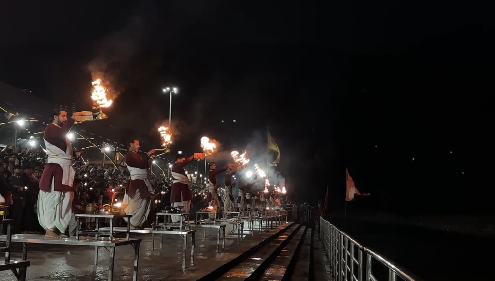
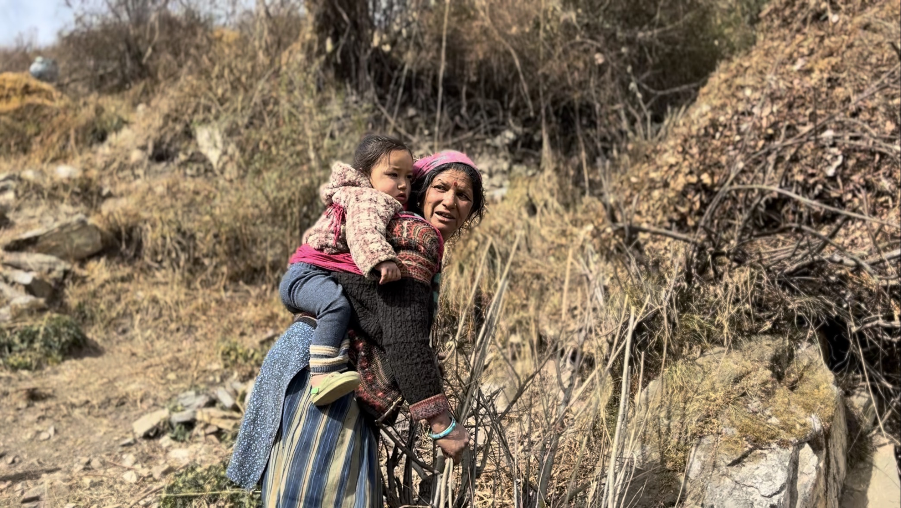
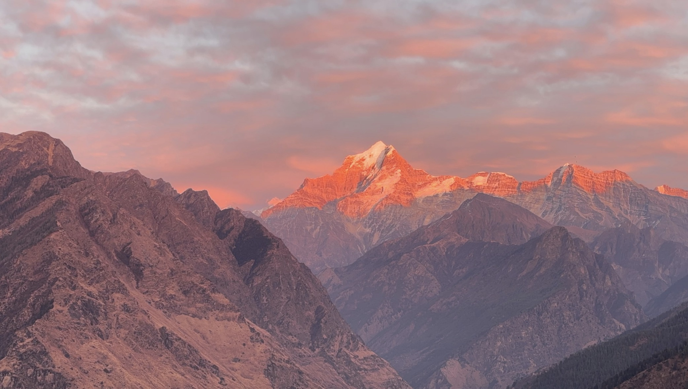
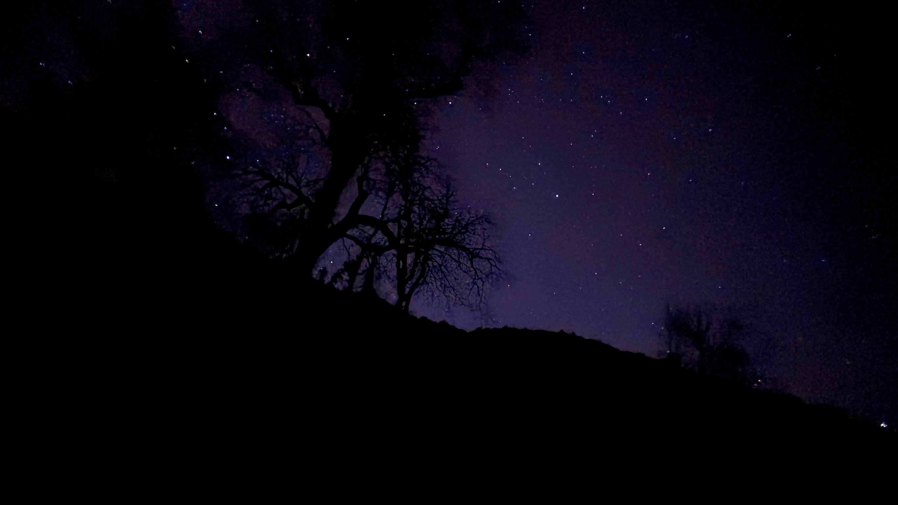
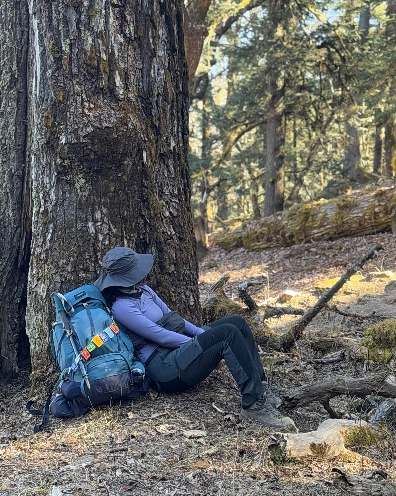
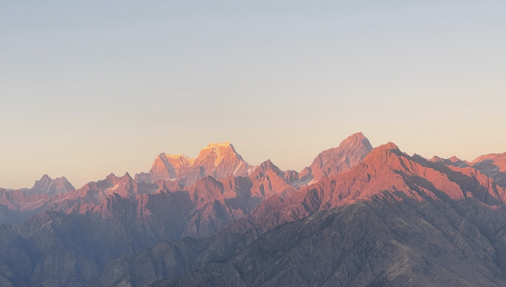

I had planned for Kuari Pass. That's what I had booked, what I had packed for, what I had told everyone back home. But somewhere between Rishikesh and the mountains, the plan dissolved — and something better took its place.
We started in Rishikesh. December Rishikesh. The kind of cold that makes you want to stay inside, and somehow also makes you want to jump into a river. We sat by the ghats that first evening and watched the Ganga Aarti — the flames, the chanting, the river carrying everything forward. There were hundreds of people around me and I barely noticed any of them.
The next morning, rafting. December water. Cold as hell. The guide said jump in. I looked at the Ganga, took a long breath, and jumped. Freezing, euphoric, chilled and alive and laughing — all at the same time. And then getting out of the water in December with the wind on your wet clothes and all of us standing there laughing like it was the best thing that had ever happened. It kind of was.


Ten Hours on a Mountain Road.
Then Dronagiri.
Rishikesh to Karchi village near Joshimath is ten hours in a tempo traveller. Winding roads, music, the slow kind of conversation that only happens when you're going somewhere together. We arrived at night, dark and tired. Slept immediately.
Then morning came — and with it, Mt Dronagiri. Standing exactly where it had always stood, lit by the first sun, enormous and completely still. It asked for nothing. It announced nothing. It was simply there. That felt like enough.

The trail started in a village. Small homes, narrow paths, tiny shops, and more dogs than I could count. Children jumping around with joy that doesn't need a reason. Women working in farms, children on their backs, utterly unbothered. The most grounded people I have ever met anywhere.
December meant no snow — dry sand and dried leaves underfoot instead. We reached Gulling campsite and I did what I always do: found a spot. My speciality, wherever I go. Not to do anything, just to sit. Just to be quiet with the mountain for a while.
Then the thing I had been waiting for the whole year happened. Alpine glow. I had it on my vision board — a photograph of mountain light going orange. And there it was, the sun falling on Dronagiri, the rocks going amber, the snow catching fire without burning. I sat there and could not look away. It feels like the mountains are smiling at you, sharing something they don't share often.

Lying on a Mountain Rock
Under the Stars
After the alpine glow, the stars came out. I lay down on a mountain rock and looked up. I could point out constellations. I watched them moving — all in one direction, slow and certain. Temperature dropped to zero. My hands were freezing. I didn't move. The sky was too important.
Morning came and I sat opposite Dronagiri with my sketching pad and scribbled something. It didn't look like the mountain. I think that's fine.


Day 2 was dense forest and steep climb. Streams crossing the trail. Rucksack getting heavier with every switchback. The fluffy trek dog walking beside me like we had always known each other.
There was a broken tree that looked exactly like the Iron Throne from Game of Thrones. I sat on it immediately. Then one pine tree caught my eye on the way through the forest, and we stopped — the photographs from that spot ended up being some of the best of the entire trip. Sometimes the trail gives you things you didn't plan for.
Then the news at Khullara camp. Kuari Pass had no snow this year. That was the buzz kill. But then — Pangarchulla had snow. Nobody had planned for Pangarchulla. It wasn't even in the consideration when I took the flight.
That evening the alpine glow hit the Hathi-Ghoda peaks and Dronagiri from Khullara camp. Views in every direction. I sat there sipping soup, watching the mountains go dark, talking to new friends from Bangalore, laughing at nothing in particular.

A Cupcake at 3,378m.
A Wish. Then the Summit.
I woke up at midnight. December midnight at Khullara campsite, 3,378m, temperature well below zero. And then I realised — it was my birthday.
My friends had carried a cupcake all the way from Rishikesh. They lit the candle. I blew it out. Made a wish — which is a secret. And then we got ready to go climb a mountain we had not planned to climb.
I had wanted this for years — a birthday on a mountain. It happened. Not at the summit I planned for. At a different summit entirely, one I didn't know existed when I boarded that flight. I think that's the best kind of gift the universe gives you.